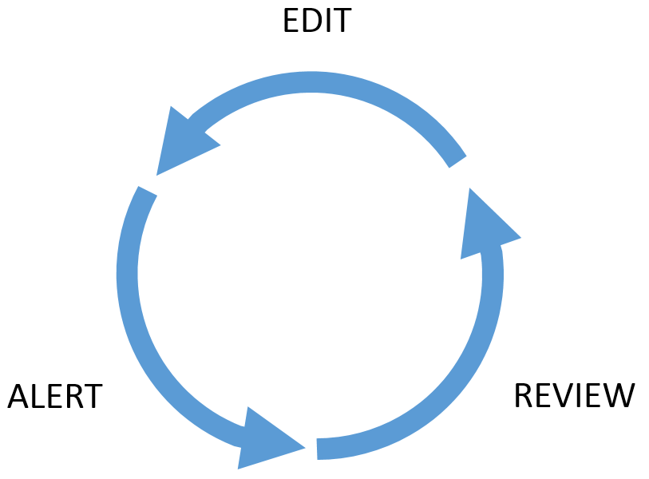
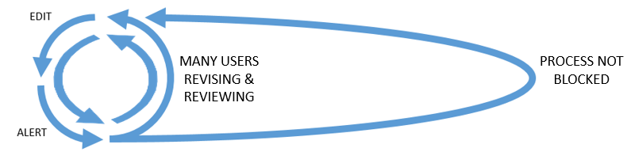
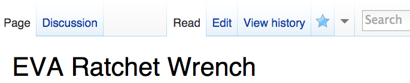
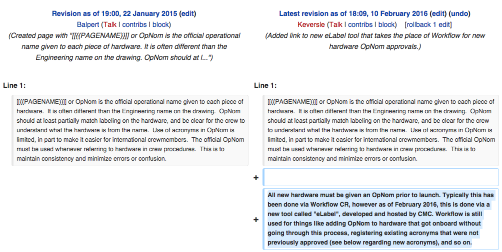
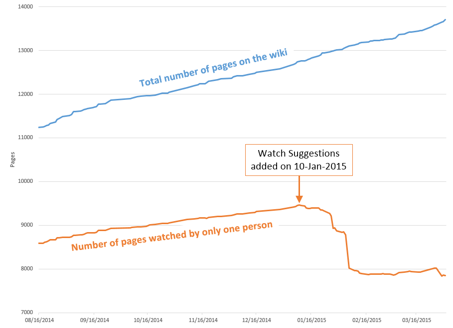
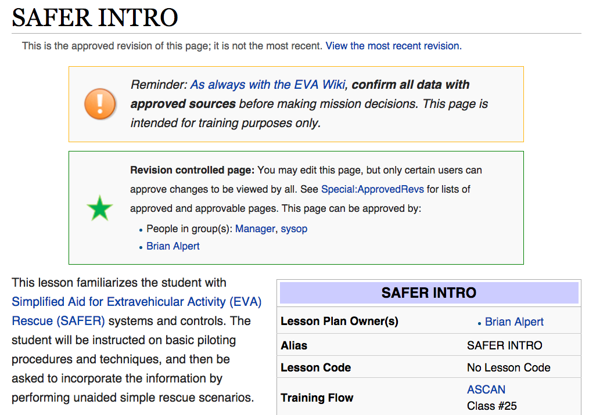

The EVA Wiki
accountable knowledge management
James Montalvo - Scott Wray - Daren Welsh
Costa Mavridis - Stephanie Johnston - Brian Alpert
(Use arrow keys to navigate)
The word "wiki"
a website that allows collaborative editing of its content and structure by its users.
How is the EVA Wiki different?
- The most accountable knowledge management system we've seen
- binding existing sources of data with the context missing from traditional search tools
- providing the power of semantic relationships between data
Console Handbook, re-born
Our collective knowledge, easily updated by anyone


Edit - Alert - Review Loop
- Systems provides method to edit content
- When edits are made the system sends an alert
- Users review changes
Edit - Alert - Revieeeeeeeeeeeew Loop

Blocked Loop

One user with a long review time blocks other users from further edits
The Wiki Way
- Users don't have to wait for other reviewers
- When delayed reviewers return . . . easily review sum of all changes
What does this edit-alert-review loop look like in the wiki?
Watch a Page
Pending Reviews

Difference View
Watch Suggestions

Accountability
Demonstrate how the wiki provides analytics to measure accountability based on user contributions and reviews
How has Watch Suggestions helped?
How well are we doing with reviewers?

Reliability
How can we make sure data isn't lost?
Page History

Fortified Accountability
How can we make sure critical data is reviewed before being published?
Approved Revisions
CETA Cart Page
Show infobox, semantic properties, links to DBs, show footer sections
US EVA 34 Page